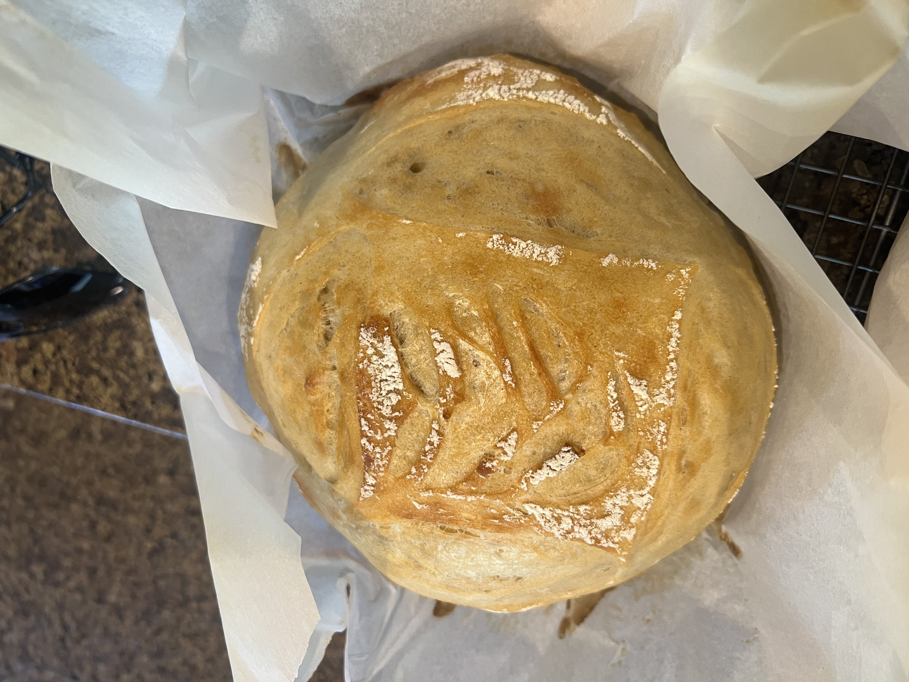

Enterprise accounts
Customer-facing ownership across a portfolio of enterprise accounts.
Liam Hosfeld
Technical consultant
I bring together data, systems, and people to solve problems and improve everyday work.
Follow the trail to impact↓Selected impact
Concrete signals from customer-facing TMS work, analytics, and integration delivery.
Customer-facing ownership across a portfolio of enterprise accounts.
Production-scale data behind analytics and billing investigations.
Usage data translated into a Finance-ready decision.
Reusable publishing and validation workflow for customer guidance.
Case studies
Analytics, internal tools, integrations, and automation — with confidential details intentionally anonymized.
Operational analytics · BigQuery · SQL
Problem: Usage lived across active and legacy products, making billing decisions slow and difficult to validate.
Data model, SQL and billing logic, reporting views, validation, and the translation of usage into a Finance-ready workflow.
Integration documentation · EDI/SFTP · CI/CD
Problem: Endpoint guidance was difficult to find, deploy, and validate as customer-facing documentation grew.
Documentation structure, publishing workflow, deployment coordination, and endpoint request and response validation.
TMS integrations · Event investigation · Oracle SQL
Problem: Shipments were moving to In Transit when a stop-arrival message arrived, before the expected departure message.
Investigation framing, SQL audit, event/message correlation, R&D coordination, and validation of the implemented fix. Customer and carrier details are intentionally omitted.
Internal tools · Python · Django · PostgreSQL
Problem: Consultants and call center/support employees had to rely on manual lookups and lengthy cases to understand account relationships and diagnose issues.
Application structure, database-backed search, relationship lookup workflow, and iteration with consultants and call center/support employees using the tool.
How I work
Professional experience
A progression from technical delivery to analytics, integrations, automation, and cross-functional ownership.
Consultant · TMS integrations, cloud systems, and process improvement
I own customer-facing work and coordinate across Operations, Cloud Services, Finance, and R&D to turn functional requirements into reliable technical delivery.
Cloud Services Intern / Co-op. Built an SSO search tool for 50K+ shipper records and analysis that identified approximately $40K in Azure savings.
Systems Operations Intern. Automated onboarding work and found duplicate accounts tied to approximately $36K in annual savings.
Research Intern · ATAS Lab. Built C# integration components for robotic object-detection research.
Capabilities
I move between integration evidence, operational data, automation, and stakeholder delivery.
Education
B.S. Computer Systems Engineering · GPA 3.83 · May 2025
Oracle SQL · BigQuery · Power BI · DAX · Data modeling · Billing and reporting
Requirements · Incident investigation · Technical demos · Process mapping · Stakeholder coordination · Documentation
TMS · MIF · EDI/X12 · AS2 · SFTP · Message and event troubleshooting
Python · PowerShell · Perl · Bash · JavaScript · C# · Git · CI/CD
Outside work
Away from the screen, I like slow, hands-on work: keeping plants alive, baking bread, and learning bass after years behind a drum kit.
